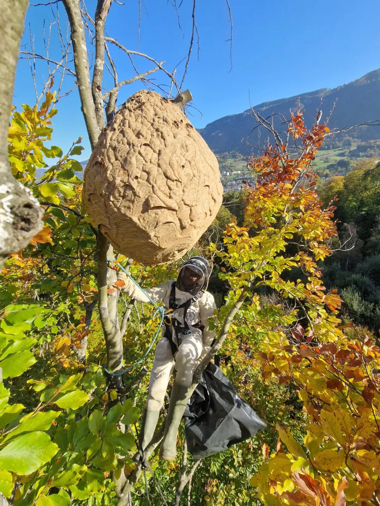
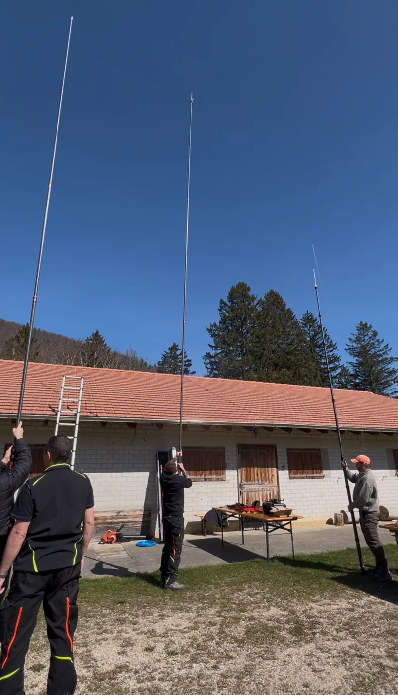
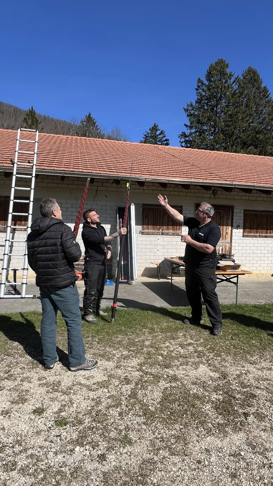
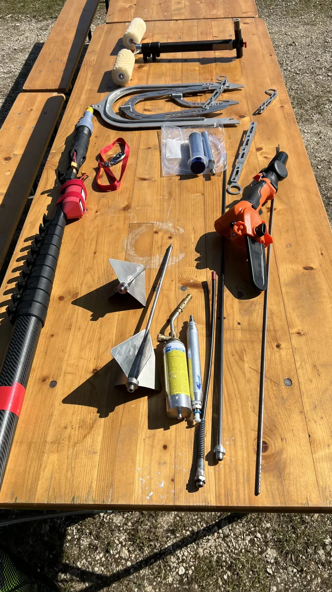
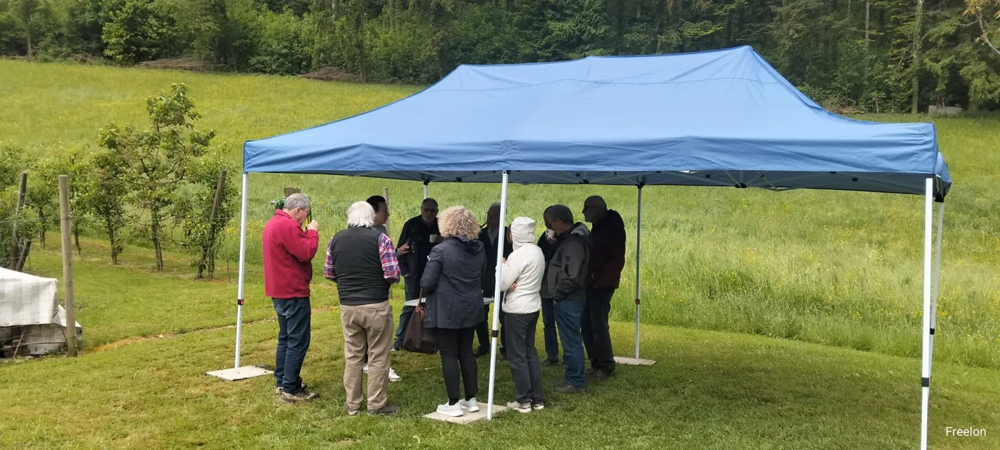
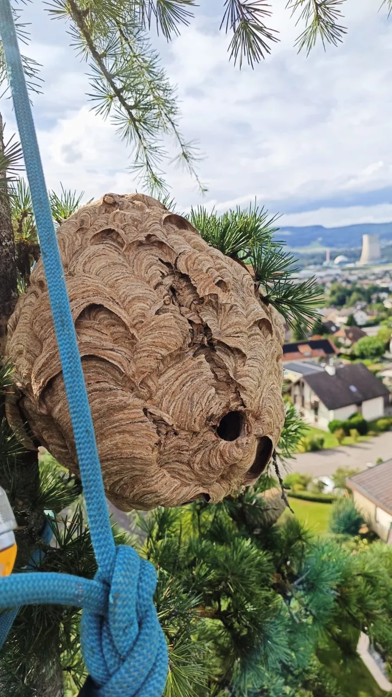
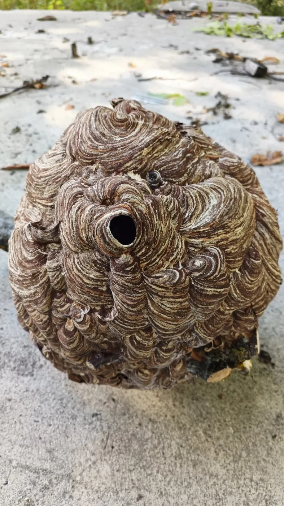
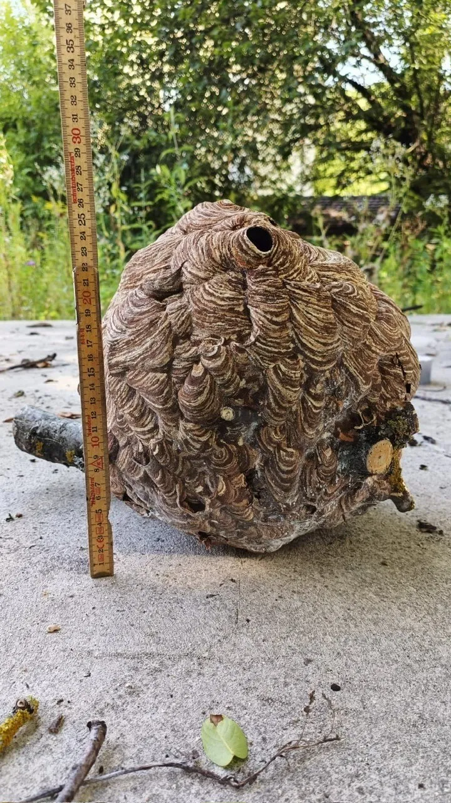
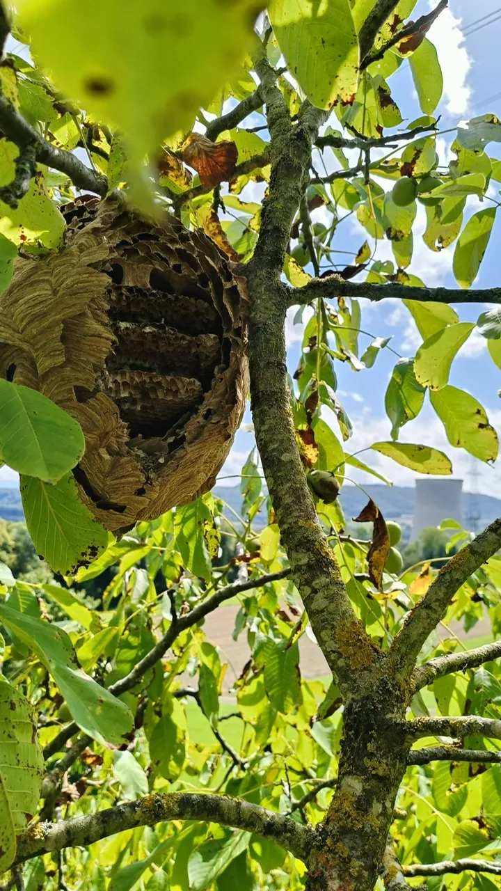

Intervention
La neutralisation et l'extraction de nids de frelons asiatiques (Vespa velutina) et de guêpes, par des désinfestateurs certifiés.
Frelons asiatiques & guêpes · Jura suisse
Neutralisation et extraction de nids de frelons asiatiques et de guêpes, pour un équilibre harmonieux entre l'homme et l'environnement. Nous intervenons en Suisse, et aussi loin que possible.
Saison frelon d'août à novembre

Ce que nous proposons
La neutralisation et l'extraction de nids de frelons asiatiques (Vespa velutina) et de guêpes, par des désinfestateurs certifiés.
Des fournitures d'intervention pour moyenne à haute hauteur, des solutions fonctionnelles, durables et évolutives, et de la location.
Des formations de A à Z liées au Vespa velutina nigrithorax, pour les professionnels du métier et ses nouveaux initiés.
Traitement guêpes et frelons
Pour une intervention rapide et efficace, contactez-nous par téléphone ou WhatsApp.
La destruction de tous les insectes ne peut pas être garantie selon la configuration.

Formation
Des cours sur demande, selon les besoins. Chaque cours de perchiste se termine par une attestation délivrée par l'expert formateur.



Sur le terrain




Contact
N'hésitez pas à nous contacter : nous serons ravis de sécuriser votre extérieur. Le plus rapide est le téléphone ou WhatsApp.